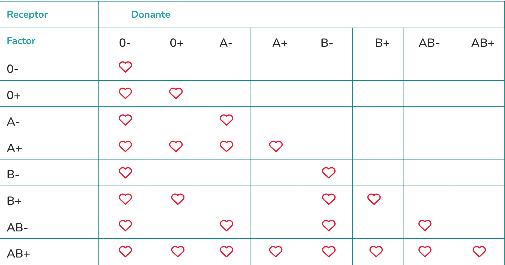

Hay cuatro grupos de sangre: A, B, AB y O. Asimismo, la sangre es Rh
positivo o Rh negativo. Así, si su tipo de sangre es A, es A
positivo o A negativo.
Su tipo de sangre es importante si necesita una transfusión de
sangre. Y su factor de sangre puede ser importante si usted queda
embarazada, ya que la incompatibilidad entre su tipo de sangre y el
de su bebé puede crear problemas.
Cada uno de nosotros nace con un tipo de sangre que pertenece a un Grupo (A, B, AB, 0) y a un factor Rh (Positivo o Negativo). Por esta condición genética, nuestro organismo debe recibir sangre compatible.
Aproximadamente el 10% de la población es RH Negativo y, por eso, cuando un paciente necesita este tipo de sangre, el Centro puede tener dificultad para obtenerla.
Te contamos qué grupos y factores son compatibles:
Descargá los criterios de selección de donantes de la Dirección de Sangre y Medicina Transfusional del Ministerio de Salud de la Nación.
Si el 3 a 5% de los ciudadanos se le ocurre donar 2 veces al año se cubre el 100% de las necesidades del pais. La sangre donada se separa para que cada paciente reciba el componente que necesita para mejorar.
Por eso, es muy importante que la población contribuya con su donación en los bancos de sangre de su localidad. Con este aporte, se puede asegurar una atención médica de calidad a todo aquel que la necesite.